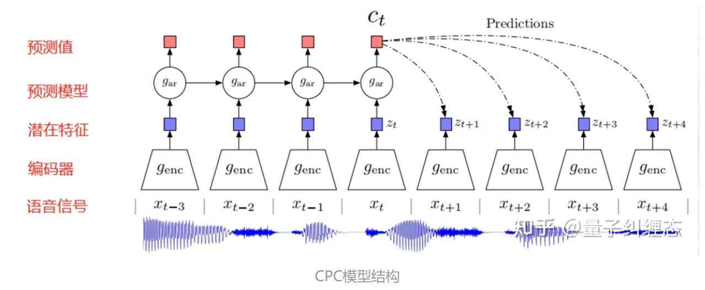
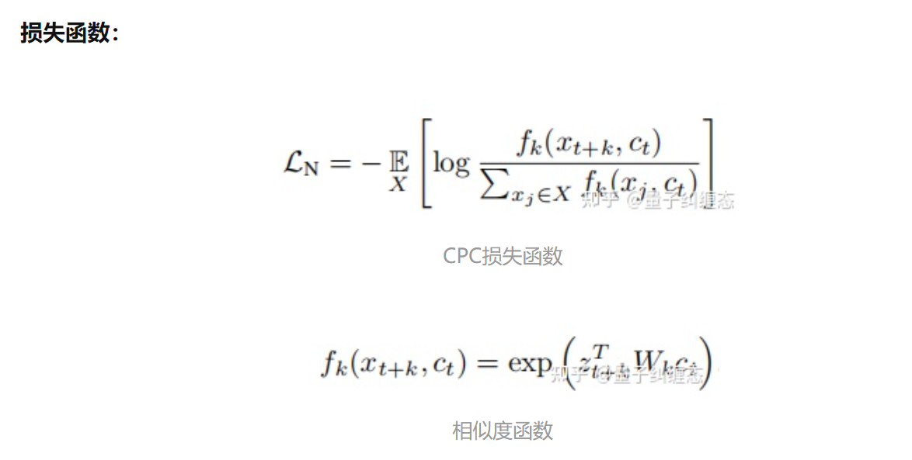
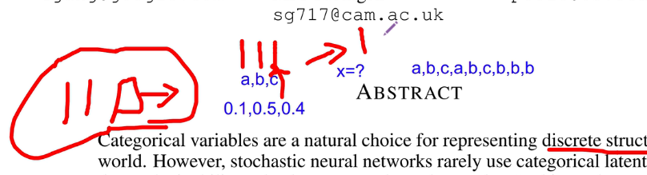
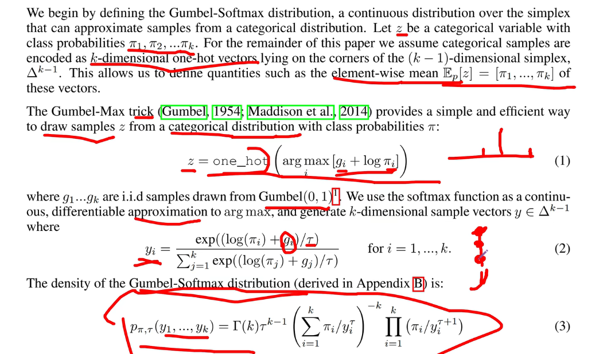

http://allall02.baidupcs.com/file/4b75b46d2vaabb4a3c3b4faa6927c1b9?bkt=en-4d166c0718877615cc3f39f0cc9f147838e9656d501c89d6343000f07b041b5c23b84cba16cb01a3&fid=2999950166-250528-705566614780217&time=1661412487&sign=FDTAXUbGERQlBHSKfWaqi-DCb740ccc5511e5e8fedcff06b081203-UTHXp0nhLRlzVbncuZRtyStSMT4%3D&to=19&size=3502430167&sta_dx=3502430167&sta_cs=4&sta_ft=zip&sta_ct=5&sta_mt=0&fm2=MH%2CYangquan%2CAnywhere%2C%2Cguangdong%2Cct&ctime=1649746581&mtime=1661412486&resv0=-1&resv1=0&resv2=rlim&resv3=5&resv4=3502430167&vuk=2999950166&iv=2&htype=&randtype=&tkbind_id=0&esl=1&newver=1&newfm=1&secfm=1&flow_ver=3&pkey=en-1b27ccbe6e35351908322f1d609b47b0bc3e3b4be2442a98705844355795f606c591ae08834c441d&expires=8h&rt=pr&r=957149489&vbdid=-&fin=IEMOCAP_multi.zip&bflag=217,19-19&err_ver=1.0&check_blue=1&rtype=1&devuid=BDIMXV2-O_CD596321A1754892BB4201E9EA4CACE7-C_0-D_0-M_525400923B87-V_0E564ACA&clienttype=8&channel=00000000000000000000000000000000&dp-logid=8947219227203307530&dp-callid=0.1&tsl=0&csl=0&fsl=-1&csign=lnGdNkEa7qeIunZZGwHGSTrEz7g%3D&so=1&ut=1&uter=0&serv=0&uc=1012510257&ti=e292035734ac5995d5bde643887ae3a7a3d5b654173183823639323619ab123a&hflag=30&from_type=3&adg=c_2b2e4cf7276eb45d73ed34bcabdbfaaa&reqlabel=250528_l_d9f97424f731ea476720d5a5ec7c91dc_-1_3790cfd72ff254bd51533a36f3228b69&ibp=1&by=themis


infoNCE loss

- 和CPC类似
- 损失函数也是类似，从其他地方采样一些片段，相似性要越小越好（是一个干扰器）
Gumbel softmax

- 对应概率相乘（类似于attention）：0.1× a+0.5×b…是连续的，但是我们要求是离散的
- 三个概率，如果取概率值最大的输给下游，backpropagation不好做，而且无法采样，永远没有a和c
- gumbel：用连续的分布近似离散的分布
- 正常采样出来的样本用one-hot编码后做平均，按理来说得到的应该是[0.1, 0.5, 0.4]

- gumbel引入的变量 $g_1,g_2,…$和VAE中引入的 $\mu,\sigma$ 类似，VAE中固定的是标准正态分布的 $\epsilon$
- $y_i$不是绝对的one-hot，即不是严格的0/1，是连续的
- 做两次，一次是直传，即直接用one-hot，反向时用的是gumbel
wav2vec是一个自监督语音预训练模型，我们将它迁移到语音情感识别这一下游任务。
在无监督训练阶段，训练过程是不跟任何下游任务进行绑定的，所以它训练得到的特征可以服务于各种下游任务，这就为什么它的迁移成本更低。接下来我们将模型应用在下游语音情感识别的任务中，并对模型进行微调（fine-tuning）